来源：https://ibimo1rg20.feishu.cn/docx/GBFzdVwApow0sgxgboDclKotn2e
根据航海手册开通小红书店铺，记得提前选择好是个人、个体还是企业店，店铺开通后我们就要去选品上品，我是从1688选的品，所以下面的实操都是1688铺货的流程：
从1688选好货后，打开小红书的服务市场【https://fuwu.xiaohongshu.com/serviceHome】，用小红书服务市场内的工具实现铺货，我用的是无忧铺货【http://hongsnatch.4k5.cn/SnatchCps#/Offer_Link】
这个工具是在小红书服务市场里选的，大家可以根据自己的使用习惯选择一个插件，应该使用都大差不差，一般都可以免费试用，后续好用再付费，这种插件都不贵，一个月好像就一杯奶茶的价格
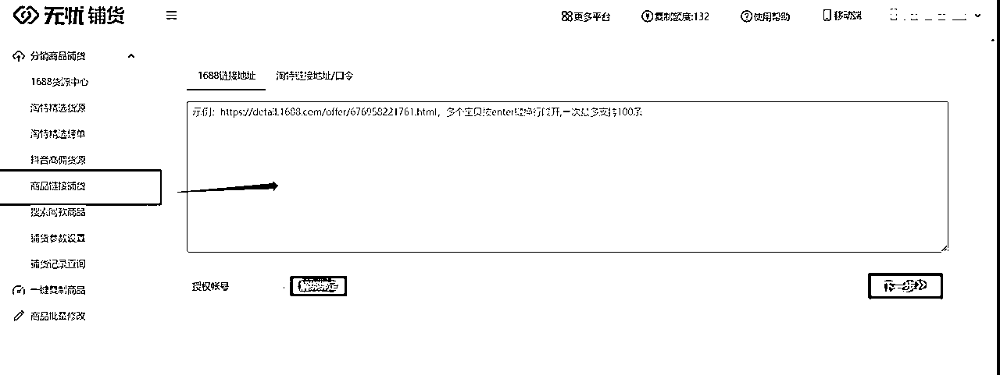
打开【无忧铺货】—选择"商品链接铺货"，将1688的商品点开，复制商品链接地址，可以复制多个，空白框有提示最多支持一百条，复制每个链接的时候记得要换行，每个链接单行
复制完成后点击【下一步】界面机会显示你要铺的商品链接图，要记得勾选左边的□，选中【选中铺货】/【全部铺货】，系统会自动铺货，这个时候会跳到铺货界面，等待就行，有时候会显示"任务失败"，就要点进去看看失败原因是什么，一般都是类目选择错误（所以在开通店铺的时候，就要选择好你可能会售卖的类目，我就是当初售卖类目选择的少了，中途不断去加类目，加类目还要审核一般3天内审核好，这就很费时间了所以还是一开始确定了自己店铺要销售的类目，或者如果担心临时会转换方向就多选择一些类目，一次性审核完是最好的）
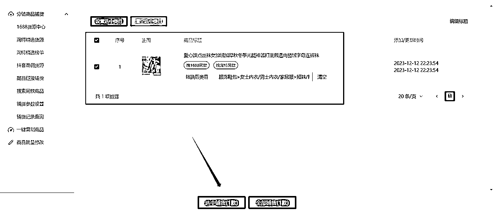
类目增加在小红书千帆后台：https://ark.xiaohongshu.com/app-system/home
【店铺】—【品牌类目资质】—【类目管理】—【新增类目】—【添加类目】，根据自己要新增的类目相应选择
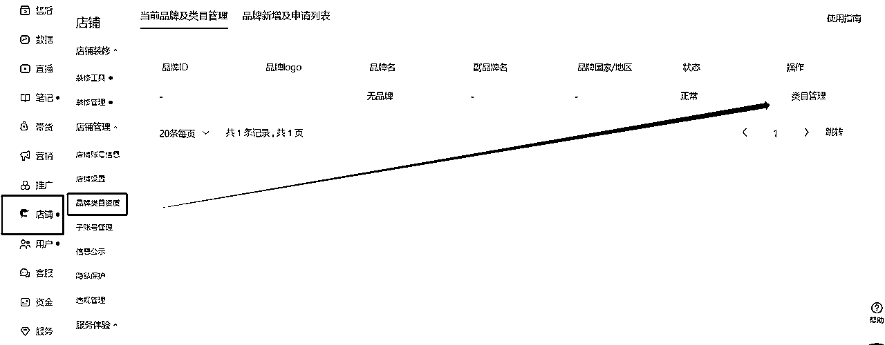
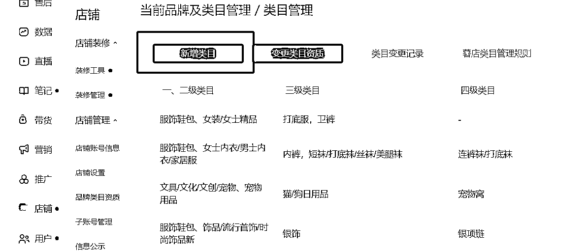
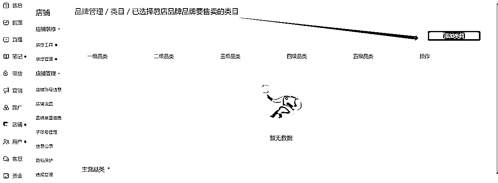
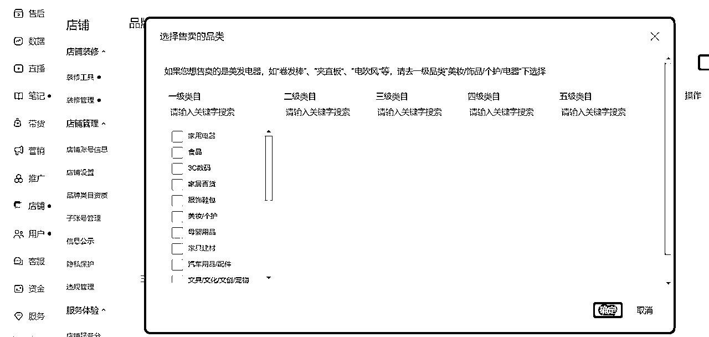
铺货成功后，小红书会把商品放在仓库内（可以通过手机小红书点击店铺内全部商品，看未上架商品是否有铺货的品），确定有后会发现这个商品还没上架，有的会提示审核不通过
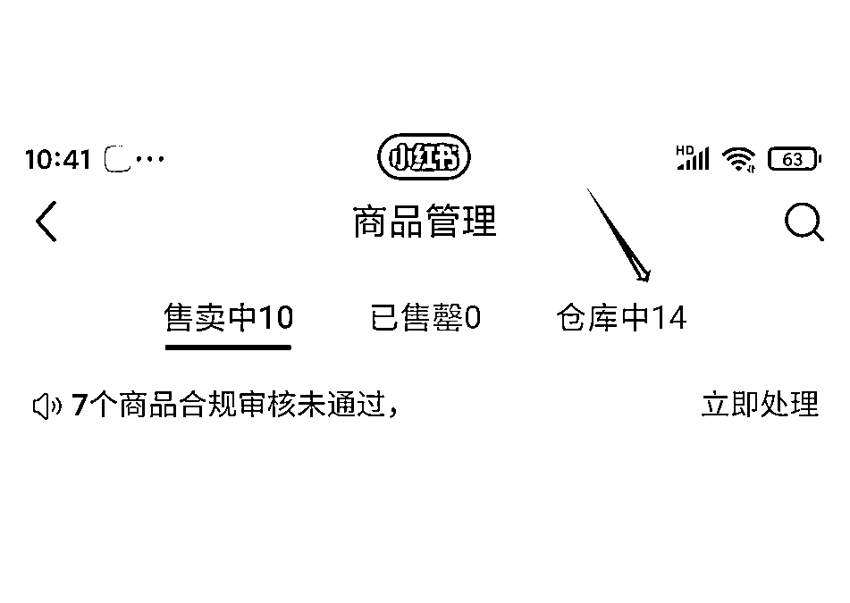
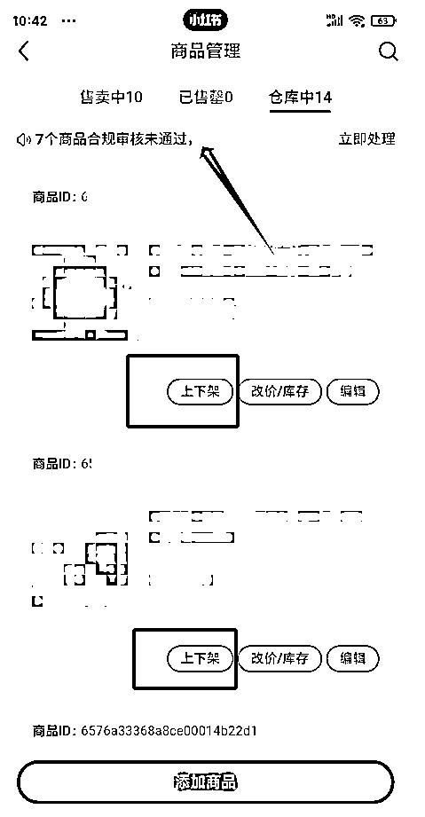
因为1688有很多图是有水印的，这种图在小红书是没办法过审，所以要"洗"一下商品详情，可以通过手机编辑商品，也可以使用小红书千帆网站去改商品的详情内容和图片，这个根据自己的操作编辑就行，系统会提示你哪些内容不通过，根据提示改就行，"洗"完后的商品记得要选择【上架】
PS：小红书的"电商学习中心"有很多内容可以学习，可以根据自己想学搜索关键词观看视频教程【https://school.xiaohongshu.com/course/list?categoryNo=20210515002&jumpFrom=search01】
批量下单、一键自动发货我一般用【逸淘】，这里新使用的时候还会需要你下载一个插件，是网页自动跳出来的直接选择你使用的对应浏览器下载就行，我用的是谷歌所以选择谷歌就行
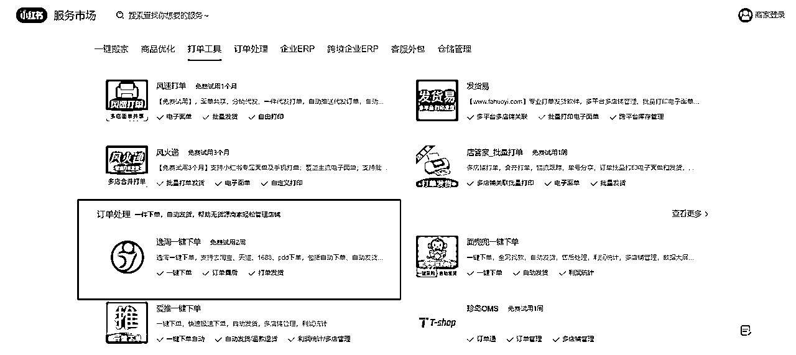
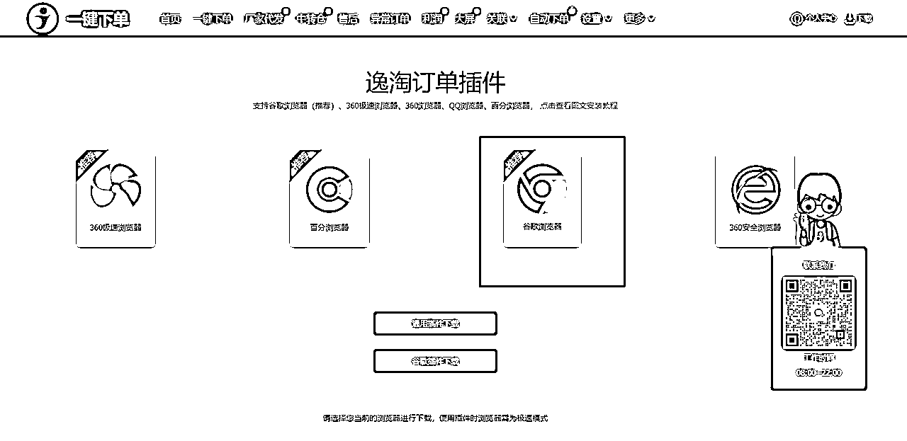
一般插件安装好了，用小红书店铺账号登陆【逸淘】就会看到自己店铺待发货的订单，点击【关联宝贝】把自己在1688找到的货源链接复制进去，就会弹出登录1688店铺的弹窗，登录成功后跳转没有问题就会显示授权完成，这里要注意有些商品是有多个sku的，要选择自己要购买的商品对应的sku
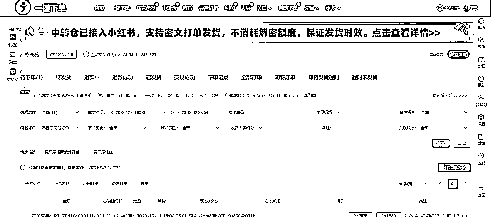
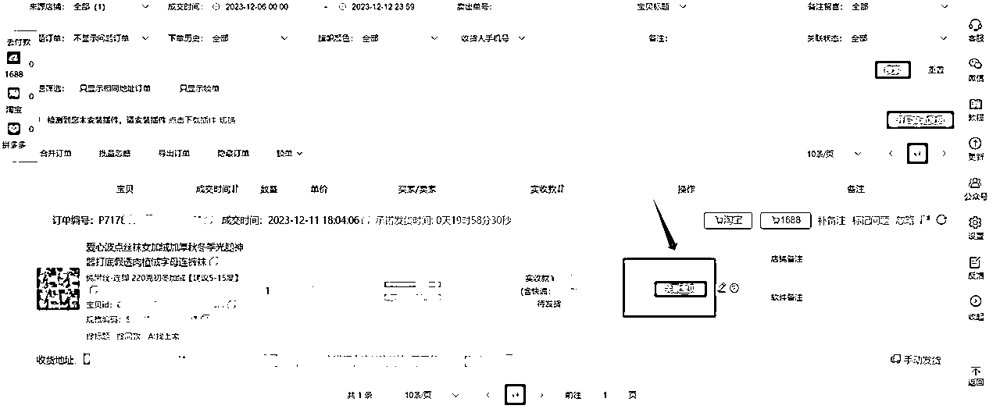
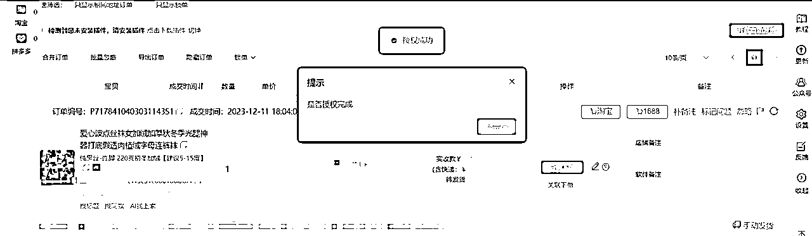
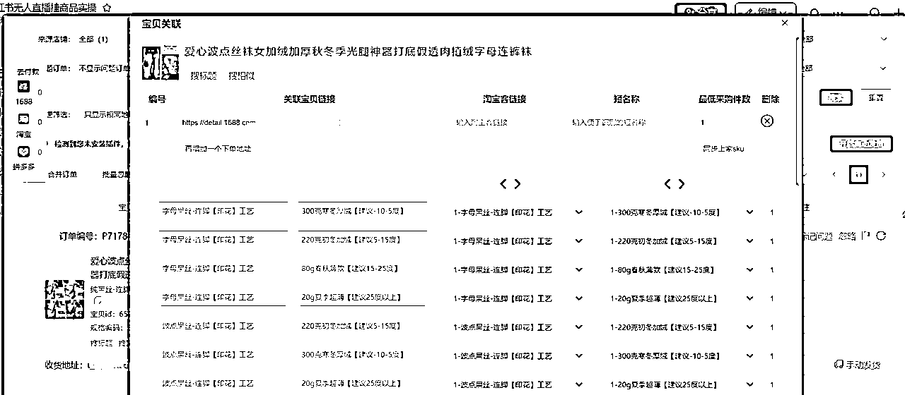
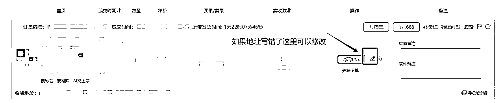
PS：如果发现输入链接后点击关联提示链接错误或者无SKU啥啥啥的，无法下单，记得检查一下关联的链接（1688的页面）是不是【一件代发】选项的链接页面
这个时候再点击【分销下单】就会弹出对应要购买的商品，扫一眼看看品类能不能对上，可以就点击右下角"分销下单"的蓝色按钮
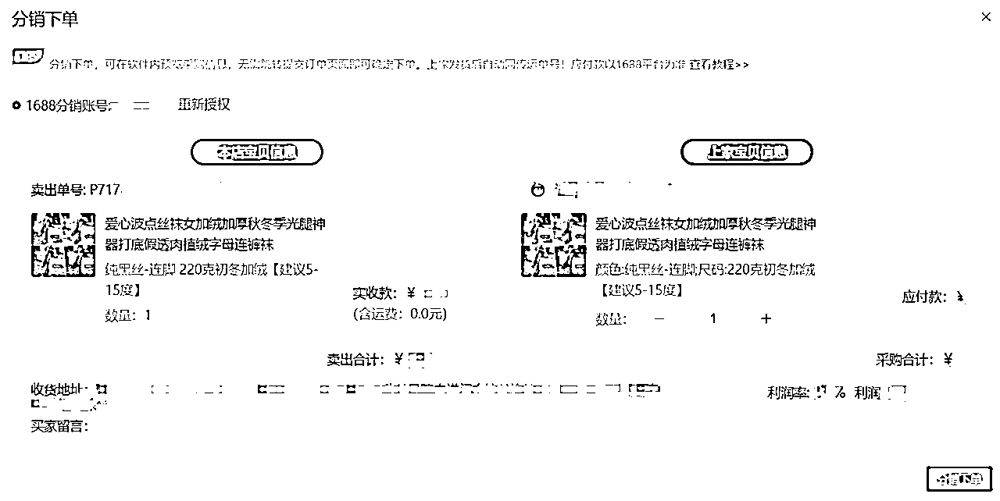
我一般每个选择完分销后，跳转进1688界面核对好买家信息，多个订单一次性合并付款，图下左边的1688按钮也是可以直接进网站的。
一键发货，图下界面右边有个红色【开启自动发货】按钮，点击该按钮，如果有的商品发货了系统会把发货的订单自动发货，点击后就不用管了等系统自己检测
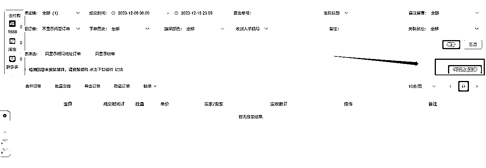
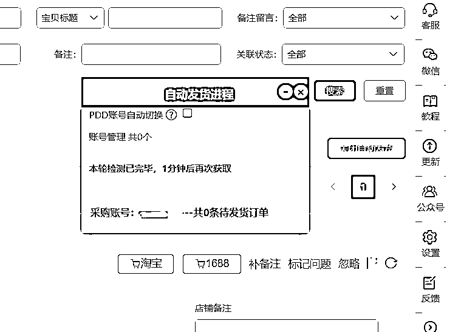
实时更新物流模板主要是为了让你商品发货地址和实际1688的发货地址一致，不然开无人直播会检测到发货地址不一致提示你是无货源，也会造成违规
前两天曜文大佬发过一篇帖子，写得就是这个，我也是看了帖子才后知后觉发现为啥这两天开直播会提示我无货源，好在只是限流了没有对店铺有其他处罚：
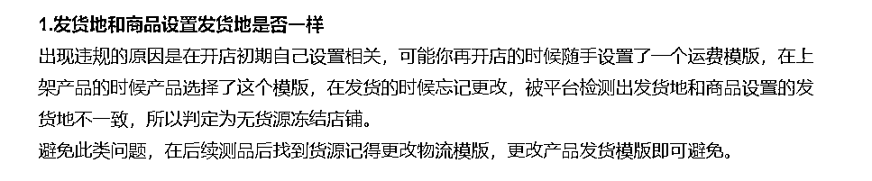
一般这块我都是在千帆电脑端设置，如果有多个商品就新增多个地址，比如我选了3个品，今天播这个品那我对应开播前就会把【地址库管理】新增一个我选好的品的发货地（大概就行，一般1688能看到在哪个市哪个区发货），然后将【发货默认】【退货默认】都打开，这样如果开播期间别人看到的你的品发货地就是你写的对应1688发货的地方
运费模板是设置偏远地区是否配送是否增加费用的，我一般运费都是默认偏远地区不配送，可以自己去百度一般偏远地区有哪几个，新增进去就行，设置了这个偏远地区用户也是下不了单的（主要是万一爆单了，有多个偏远地区还挺麻烦的如果有退货就更麻烦了）
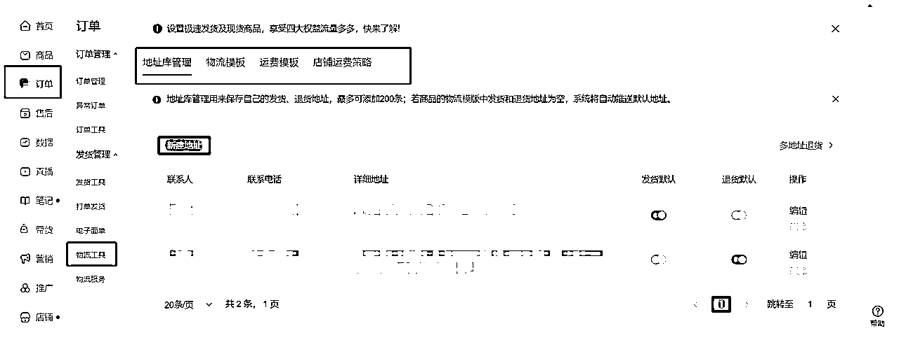
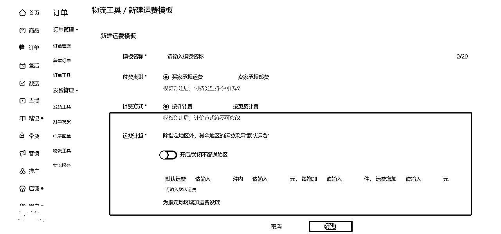
手机端的设置没有电脑端这么详细，也是在千帆app内设置，建议还是在电脑端设置比较好，入口在这：
进入千帆app首页，往下拉有个【全部工具】，进入页面再往下拉【物流设置】，里面就有相关物流模板了，我设置的就是图三相关的，这里有个要注意的是退货地址，有些买家买了想要退，因为我设置的模板内发货地址不是具体的，是我根据1688商品发货地，大概选择的一些地址，所以在用户选择退货的时候系统会自动弹出我之前填的 不详细的退货地址给买家，所以我会在这个退货地址写上一段话，让买家主动找你要详细地址，这样也可以顺便问问为啥退货，做一波商品调研啥的，图4大概就是这个意思
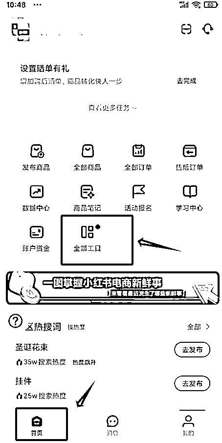
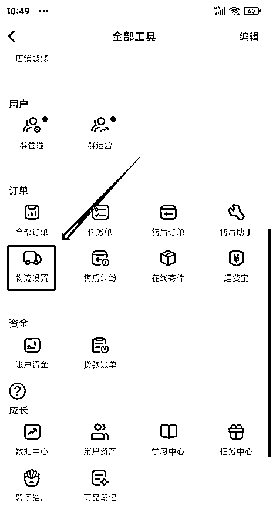
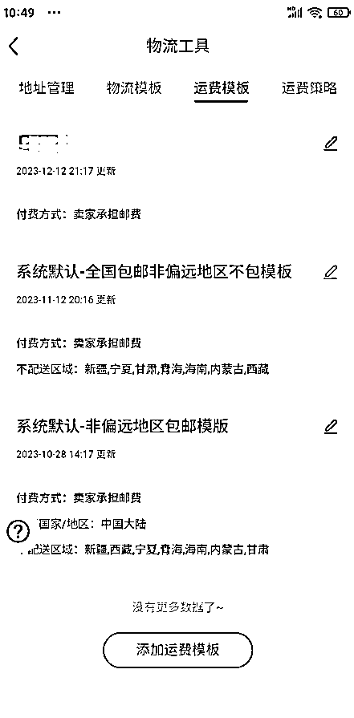
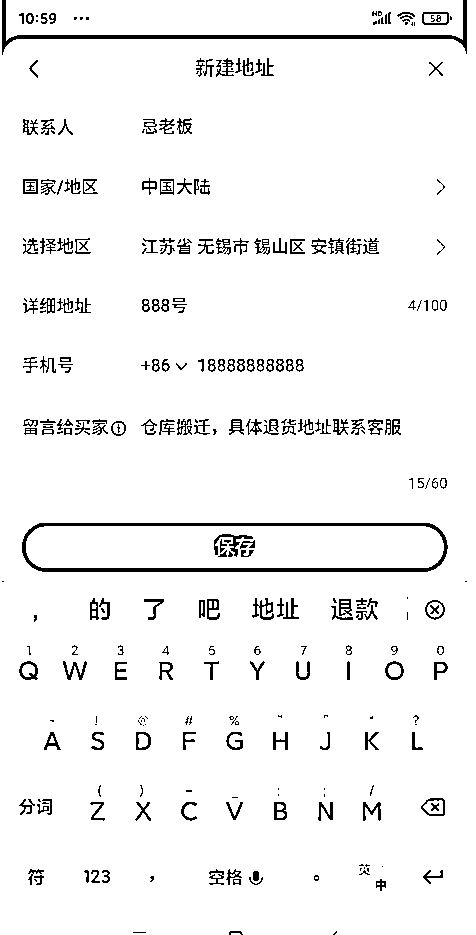
优惠券设置，优惠券在小红书app的全部商品页面，在小红书app主页上方有个【管理店铺】，进去后往下拉就有个【优惠券】，进入界面点击【+】，根据自己的需求选择店铺通用/指定商品，推广渠道我一般都选"店铺新人劵"，点击下一步，进入下一层级做好时效、领取数量等相关设置就行，记得最后拿其他账号看一下是否设置成功了可以领取，是否正常减了相应价格
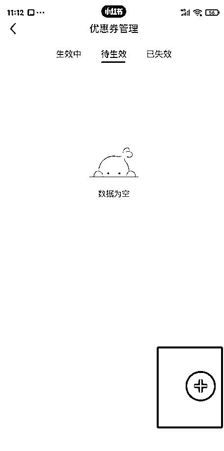
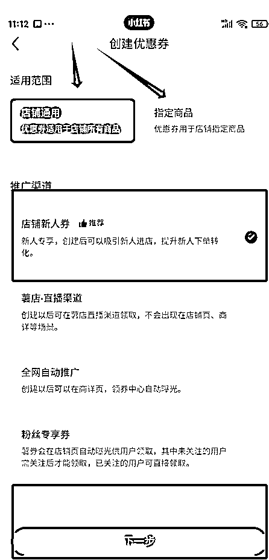
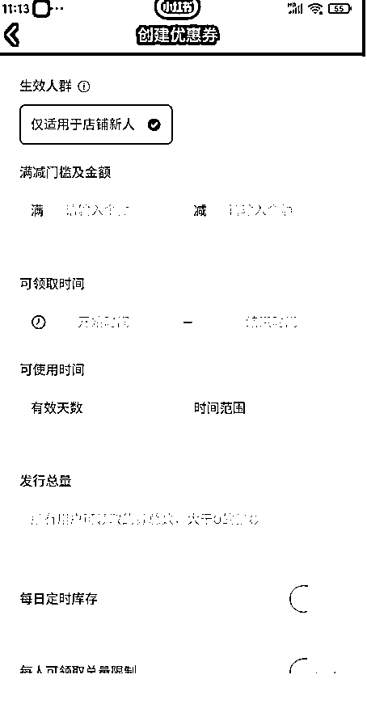
1.商品上架，把商品物流工具改成要播的品的发货地
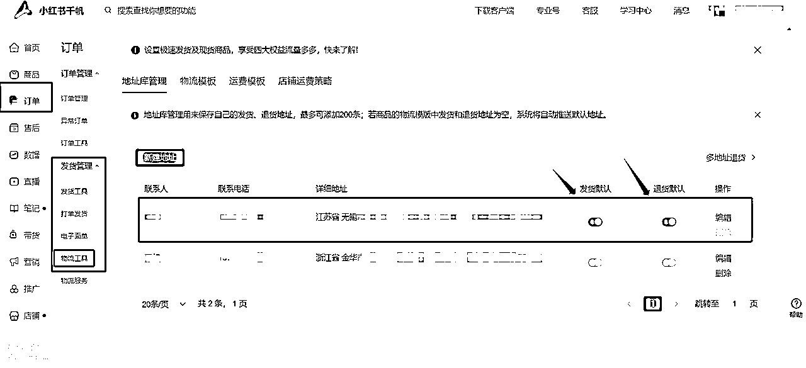
2.开始直播，开播后进入直播间上架商品，并开启【弹卡】
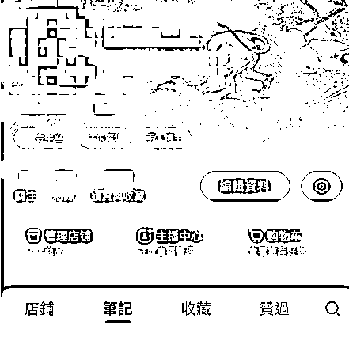
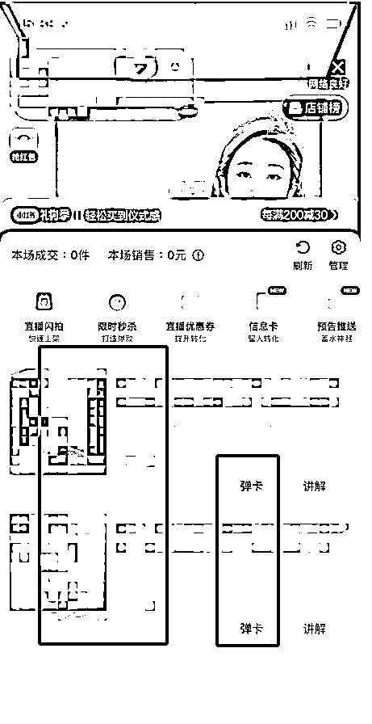
在直播间内领取直播奖励，或者完成相关任务领取薯钻（薯钻有用，也可以根据任务后续获得直播曝光卡）
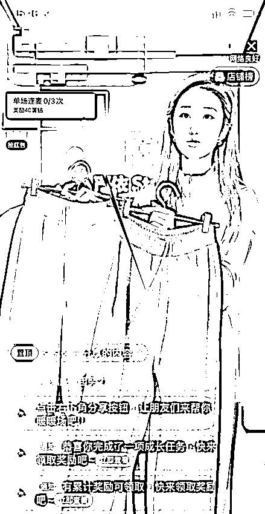
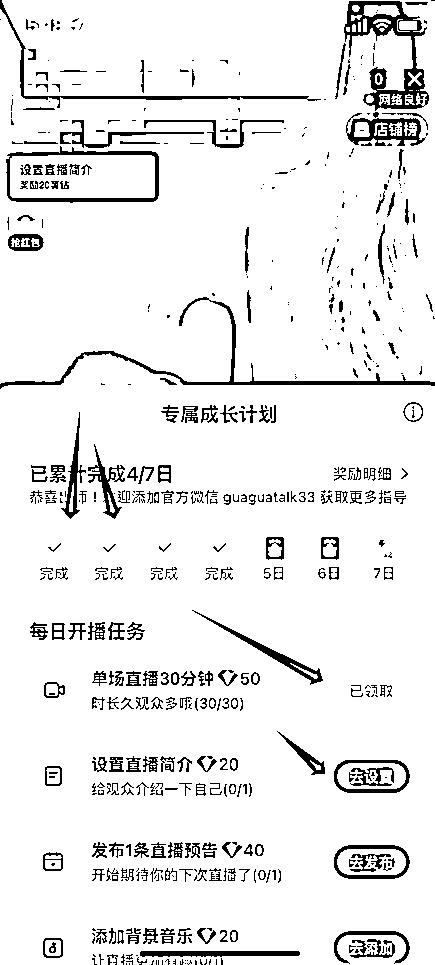
直播曝光卡或其他道具使用：
在直播界面右下角点击【更多】按钮，进入面板选择【直播送礼】，进入选择【背包】就能看到你有的道具卡，选择相关道具卡进行使用，道具卡是有时效的不要舍不得用，后续有任务还是可以领的，在时效前用完就行
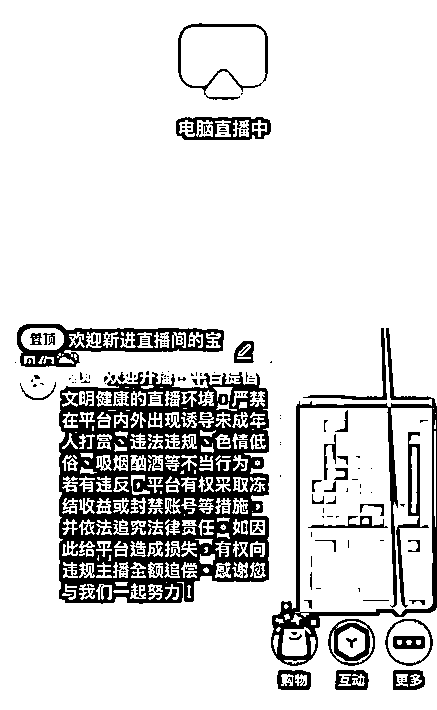
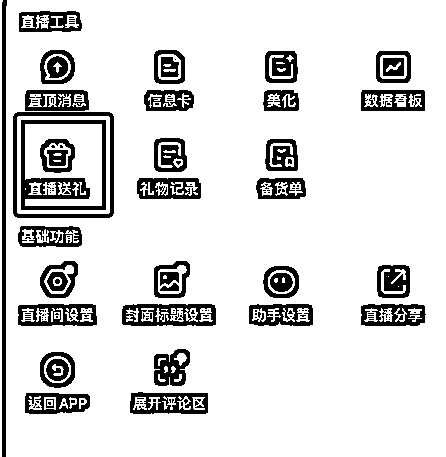
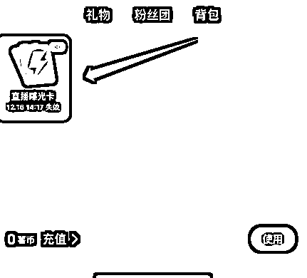
综合之前发的抖音直播录制放小红书无人直播的文章， 总的流程就是：
以上就是小红书开通店铺后，选好1688的品铺货和开播后店铺内相关设置内容，因个人还在摸索，若有很多没写清楚的或者有误的，还望圈友们见谅。
我是忌廉😀，感恩因帖子遇见，希望能跟做小红书店铺圈友们链接、交流，一同进步！